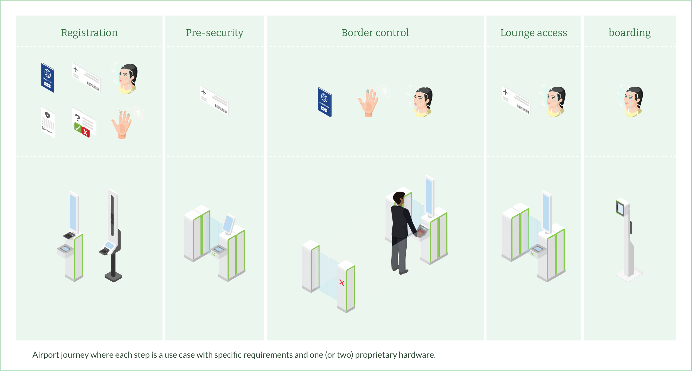
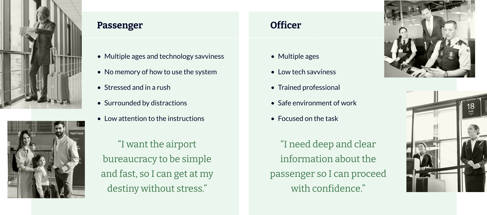
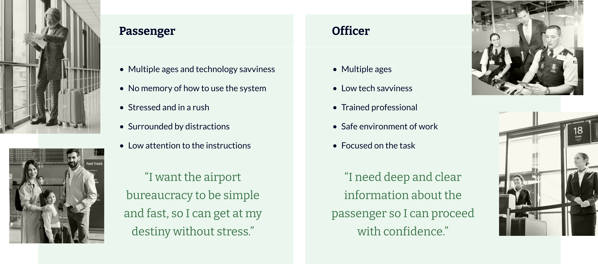
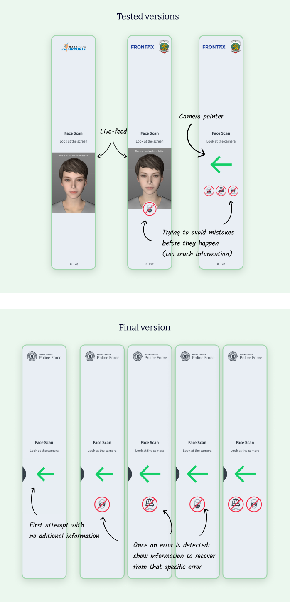
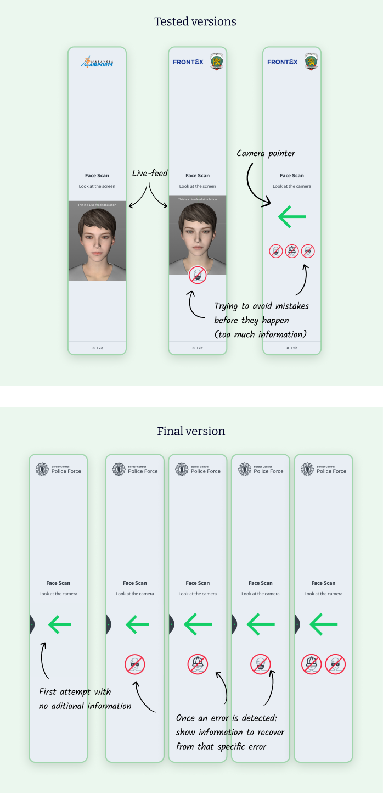

As a member of a recently created Product Design team, my mission on this task was to improve the end-user experience while creating a scalable design framework to delivery projects with agility and reliability.

Vision-box produces hardware and software to automate airport services, mainly through the use of biometry. The most common product is the e-gate for border control, which is just one from many use cases in an airport journey.
The company's vision is to create a seamless airport experience, by registering the passengers' biometry once and letting them pass through the following gates only showing their faces.
In practice, what existed when I started were a number of e-gates deployed as isolated use cases in projects globally spread. Many for border control, some for pre-security, and others for boarding and lounge access.
The touchpoints were not connected and there was no consistency between them, even when inside the same project. Thus the passenger experience was far away from seamless.
 

The users in this airport experience can be divided into two very distinctive groups: passengers and officers. The passenger requires fast and simple tasks, while the officer needs deep and clear information.
These personas are based on interviews and observations conducted by me and my team in airports with real passengers, border force officers and airline agents. We also gathered information from internal stakeholders.
Internally, every new deal becomes a project with its idiosyncrasies, milestones, a squad of dedicated developers and analysts, and a temporarily allocated product designer.
Although each of these stakeholder profiles has a different technical need, what unites us is the goal of excellence in customer satisfaction, which means quality, speed, and good communication with the client.


I was the most senior product designer in the company’s first and new Product Design Team compound of:
As a team, our strategy was to build a shared knowledge base to support projects with effective, efficient, and innovative product experiences.
We had very poor knowledge of the previous projects. However, we were expecting dozens of new ones to be started in the upcoming months.
My strategy was to learn by doing. So I was delivering the first projects by replicating and adapting from previous ones, but adding small improvements with each new iteration.
By doing so I was managing the tight schedule while validating hypothesis with real users. Ultimately, I was building a holistic view of users’ behaviors, internal processes, and technology constraints.

As a consolidation of the solutions proposed I created two design systems (one for the passengers and another for the officers UIs), and a framework to produce the UX specifications of projects and products.
The choice to build two instead of one design system was to facilitate maintenance and simplify the documentation, since the needs and the platforms used by these two groups of users are very distinctive.
During the development phase, the project team was struggling to cover all the possible scenarios of a use case. Which meant that the projects were being delivered with gaps and bugs identified by the clients in the final stages.
I created a UX specification framework where the project team receives not only the inspectable screens, composed of documented components, and downloadable assets, but also the sequence of screens for each scenario with annotations and instructions.

Here is the VB-Theme in action:
We realized that we only needed a few templates to communicate all the instructions and feedbacks to the passengers. Changing a template copy and image via properties and without really coding we could instruct to present a passport or boarding pass, to communicate success or failure.
By doing so we were not only optimising the work, but making the passengers experience consistent throughout their entire journey. Also, these templates are embedded with solutions for specific user problems and by using them we can skip these problems and focus on new ones.
The size and aspect ratio of the e-gates and totems screens bring a problem to passengers because they can’t see the entire screen without shifting their head and refocusing their attention. It meant that any information not close enough to their eyes was taking longer to be consumed, or worst, was not being seen at all.
Studies show that people have an optimal visual field 25º above their standard line of sight and 30º below. So we made sure to accommodate the content of every screen inside this area. Besides that, because passengers’ height may vary from 1,20 to 2,10m (regulation requirement) we developed a mechanism to adapt the content position to each passenger height.

Present in most of the use cases, face capture is a critical step for the business and represents a technical challenge. There are two types of face capture: registration and identification. The face captured for registration has strict rules of positioning, expressions, face coverings, and lightning because it will be used as a source for comparison during the identification, which has more relaxed requisites.
Research indicates that users expect to see a live-image from the camera (live-feed) during this step. The tests, however, showed that by looking to screen the passenger was not looking straight (the camera is positioned beside the screen) and therefore not compliant with the registration rules. Because of this, and many negative feedback regarding the quality of the live-feed, which were technically not possible to fix in the short term, we decided to use a camera pointer instead.
 

It is one of the Heuristics rules of UX and we have, in fact, collected users’ negative feedback regarding their ability to control the process.
Border control is not optional for passengers. However, they can always choose to be processed by an e-gate or a border police officer.
When a user finishes a process and leaves, the next user shouldn’t have to wait for the touchpoint to dismiss the previous user’s message and be ready.
As a solution I included an exit flow for whenever it is possible and a next passenger button with a progress indicator at the end of every process.
Governments are toughening the rules of accessibility, and users are already more critical. We had complains about small typefaces and color combinations that were hard to read.
I did a review of the existing software and ended up creating a new architecture of color palettes, text styles, and the specification on how to combine them, keeping consistency and compliance with WCAG 2.


The first version of VB-Theme took 6 months to be released and used by projects. Clients and all the stakeholders were very happy with the improvements in quality and speed in our deliveries.
Projects decreased between 60 to 80% the days needed to implement the front-end. Because of VB-Theme, projects’ development was up to 6x faster!

The live-feed functionality is important for the business, since it is expected from users in the biometric step, which is the main value proposition of the company. However, the experience of the live-feed was very bad. It was clearly slow and noisely. More than the technology performance, I believe it should not only display the real world being filmed by the camera, but also all the information detected by the system, simultaneously.
In other words, I saw a big potential for Augmented Reality, but I would have to find a way to prototype the ideas that I had because the regular design tools were helpless.